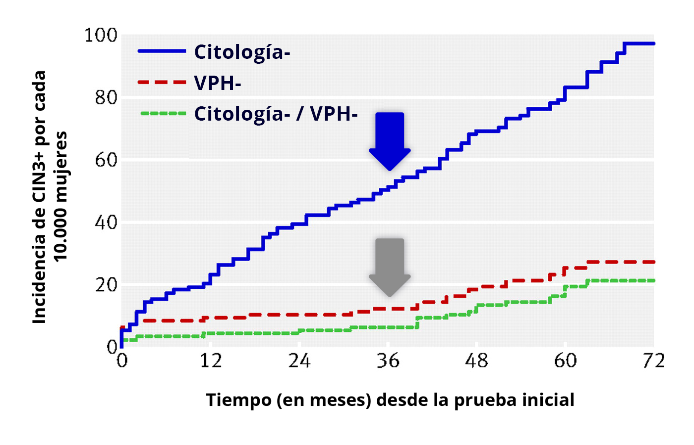
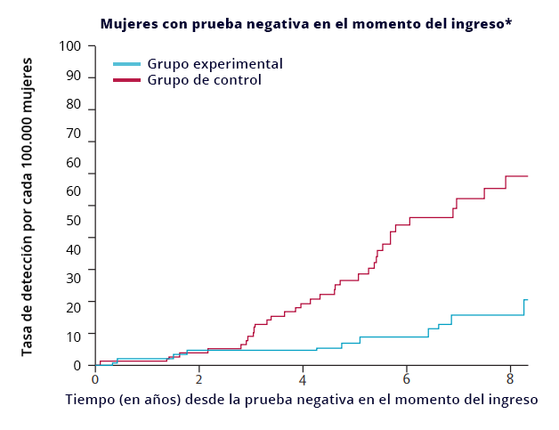

La prueba del VPH conlleva la identificación de infecciones por
VPH en muestras vaginales o de cuello uterino. La mayoría de las
pruebas de VPH utilizadas en el cribado primario identifican el
ADN o el ARN virales. Las agencias reguladoras aún no han aprobado
las pruebas para identificar las proteínas virales para su uso en
el cribado primario.
La mayoría de las pruebas de VPH utilizadas para cribado detectan
los 13 tipos de VPH clasificados por la IARC en el grupo 1 o 2A
(VPH16, 18, 31, 33, 35, 39, 45, 51, 52, 56, 58, 59 y 68) según su
potencial cancerígeno. La mayoría de las pruebas también incluyen
el VPH66 (un tipo de VPH con solo un “posible” potencial
carcinogénico), y algunas también añaden el VPH 53.
En 2020, existen más de 250 pruebas de VPH disponibles
comercialmente. Se diferencian en cuanto a si detectan ADN o ARN,
los tipos específicos de VPH detectados y si proporcionan
información sobre la detección global o específica del genotipo,
así como en el método de detección utilizado (hibridación por
amplificación de señal frente a la reacción en cadena de la
polimerasa o PCR por sus siglas en inglés). En la sección 3.3.3 de
este módulo, se puede encontrar más información sobre las pruebas
de VPH validadas para su uso en el cribado.
1 Excelente sensibilidad y alta especificidad
TABLA 2
Sensibilidad y especificidad absoluta y relativa agrupadas para
CIN3+ de citología (ASCUS+ como punto de corte de anormalidad),
HC2 como prueba de VPH y ambas combinadas [7]Bosch FX, Robles C, Díaz M, Arbyn M, Baussano I, Clavel C, et al. HPV-FASTER: broadening the scope for prevention of HPV-related cancer. Nat Rev Clin Oncol 2016.,[8]Arbyn M, Haelens A, Desomer A, Verdoodt F, Thiry N, Francart J, et al. Cervical cancer screening program and human papillomavirus (HPV) testing, part II: update on HPV primary screening [Internet]. Brussels: Belgian Health Care Knowledge Centre (KCE); 2015..
| Prueba de cribado |
N.º de estudios |
Sensibilidad (IC 95%) |
Especificidad (IC 95%) |
|
Datos absolutos |
| Citología (ASCUS+) |
21 |
0.75 (0.66-0.84) |
0.92 (0.90-0.94) |
| HC2 |
22 |
0.95 (0.93-0.97) |
0.89 (0.87-0.91) |
| Co-test (HC2 y citología ASCUS+) |
12 |
0.97 (0.94-0.99) |
0.83 (0.77-0.89) |
|
Datos relativos |
| HC2 vs citología (ASCUS+) |
26/22 |
1.32 (1.15-1.51) |
0.98 (0.97-1.00) |
| Co-test (ASC-US+) vs HC2 |
10/7 |
1.04 (1.03-1.06) |
0.94 (0.92-0.95) |
| Co-test (ASC-US+) vs citología (ASC-US+) |
10/9 |
1.33 (1.29-1.37) |
0.93 (0.92-0.93) |
Una de las pruebas de ADN del VPH más frecuentemente utilizadas y
estudiadas en todo el mundo es la Captura de Híbridos o Hybrid
Capture 2 (HC2), una prueba de amplificación de señales que
identifica 13 tipos de VPH oncogénicos. La HC2 tiene una
sensibilidad del 95% para detectar CIN3+, la cual es
aproximadamente un 30% más alta que la citología y una
especificidad para CIN3+ de alrededor del 89% que no es
estadísticamente diferente a la de la citología.
Cuando los intervalos de confianza de dos estimaciones no se
solapan, significa que son estadísticamente diferentes entre
sí. En cambio, cuando se solapan, no puede descartarse que
sean estadísticamente diferentes.
Análisis agrupados de sensibilidad y especificidad para
otras pruebas de VPH basadas en PCR que detectan más de 12
tipos de VPH han mostrado valores del 95,1% y 91,9% para
CIN2+, y 93,6 y 86,5% para CIN3+ respectivamente [9]Koliopoulos G, Nyaga VN, Santesso N, Bryant A, Martin-Hirsch PP, Mustafa RA, et al. Cytology versus HPV testing for cervical cancer screening in the general population. Cochrane Database Syst Rev 2017..
En la tabla anterior, la combinación de las dos pruebas (co-testsLos co-tests se refieren al uso concomitante de citología y
pruebas de VPH para el cribado primario, de modo que las
mujeres con un resultado positivo en cualquiera de estas
pruebas son derivadas para la realización de pruebas
complementarias.) presentó una sensibilidad más alta pero una especificidad más
baja que la citología o la HC2 por separado, tal y como cabría
esperar al tratarse de una doble prueba. Sin embargo, la
sensibilidad del co-test frente a la HC2 resultó solo ligeramente
superior (4 %), lo cual plantea dudas sobre el beneficio de la
doble prueba desde el principio. Las mujeres son inicialmente
cribadas con dos pruebas en lugar de una, lo cual incrementa
considerablemente los costes y la positividad de los resultados
(tasa de derivación). Es por ello por lo que la Sociedad
Estadounidense contra el Cáncer recomienda ahora el cribado por
detección del VPH como prueba única cada 5 años en lugar de
realizar un co-test cada 3 años, como se recomendó en el 2012.
NOTA:
No hay que confundir el cotest (en el que todas las mujeres se
someten a ambas pruebas y se las deriva a una colposcopia si
alguna de ellas es positiva) con el triaje de VPH positivas con
citología, o viceversa (en el que solo las mujeres que dan
positivo en la prueba primaria se someten a la segunda).
La especificidad de la prueba del VPH depende de la
prevalencia de la misma (es decir, la prevalencia del VPH,
que varía en función de la edad y el estado vacunal). Cuanto
mayor sea la prevalencia de la prueba, menor será la
especificidad. Las mujeres no vacunadas de hasta 30 años
muestran la prevalencia más elevada de infecciones y
lesiones debidas al VPH y, por tanto, en estas mujeres, la
especificidad de las pruebas de VPH es inferior. Dado que es
poco probable que la mayoría de estas infecciones progresen
a cáncer (falsos positivos), la detección puede provocar
angustia psicológica innecesaria y llevar al
sobretratamiento.
Al aumentar la prevalencia de las infecciones de alto
riesgo, la especificidad disminuye, pero el VPP no se ve
necesariamente afectado en ausencia de un cribado previo.
Sin embargo, en las mujeres que se han cribado recientemente
y en las vacunadas contra el VPH, se espera que el VPP
disminuya. Para más información, consulte a Giorgi-Rossi et
al. [10]Giorgi-Rossi P, Franceschi S, Ronco G. HPV prevalence and accuracy of HPV testing to detect high-grade cervical intraepithelial neoplasia. Int J Cancer 2012..
En general, se recomienda el cribado con citología a las
mujeres de 25 a 30 años, dada la menor especificidad de la
prueba del VPH y, por tanto, el mayor riesgo de
complicaciones en el embarazo asociadas al tratamiento de
lesiones por sobrediagnóstico (detección y tratamiento de
lesiones de alto grado con poca probabilidad de progresar a
cáncer). Después de los 30 años, la prueba del VPH es la
prueba de cribado recomendada. Sin embargo, no existen
directrices claras sobre cuál es la prueba primaria óptima
para las cohortes de niñas y mujeres vacunadas.
La mayor positividad (8-14%) y la menor especificidad que
presentan las pruebas de VPH en comparación con la citología dan
como resultado una sobrederivación y un sobretratamiento. Por lo
tanto, se recomienda que las mujeres con resultado positivo en el
cribado con prueba de VPH realicen una segunda prueba de triaje
para mejorar el valor predictivo positivo de la prueba del VPH.
Para obtener información sobre cómo superar esta menor
especificidad de las pruebas de VPH mediante diferentes tipos de
pruebas de triaje, y sobre las opciones de manejo clínico para las
posibles combinaciones, consultar el módulo 4.
Idea clave:
Las pruebas de VPH y los co-tests detectan más lesiones
precancerosas que la citología por sí sola. Sin embargo, debido
a su menor especificidad, particularmente en edades más
tempranas en países en los que a las mujeres jóvenes no se les
ha ofrecido la vacunación, requiere de pruebas de triaje
posteriores.
2 Mejor valor predictivo negativo (seguridad) para la
detección actual y futura de lesiones precancerosas y cáncer
invasivo
Las pruebas de VPH tienen un bajo valor predictivo negativo para
la enfermedad actual y posterior, es decir, muy pocas mujeres con
la enfermedad son clasificadas sanas de forma incorrecta (falso
negativo). Es poco probable que las mujeres con un resultado
negativo del VPH desarrollen una enfermedad de cuello uterino en
los cinco años posteriores a la prueba, dos años más que la
protección ofrecida por la citología negativa.
FIGURA 4
Incidencia acumulada de CIN3+ hasta los 72 meses posteriores a un
resultado inicial negativo de citología (en azul), prueba de VPH
(rojo) o ambas (verde) [11]Dillner J, Rebolj M, Birembaut P, Petry K-U, Szarewski A, Munk C, et al. Long term predictive values of cytology and human papillomavirus testing in cervical cancer screening: joint European cohort study. BMJ 2008.

En este estudio de referencia, Dillner et al. reunió datos de
varios programas de cribado europeos para evaluar el uso de la
prueba del VPH mediante HC2 en comparación con la citología. El
estudio reveló que 50 de cada 10.000 mujeres con una citología
normal al inicio del estudio desarrollaron CIN3+ durante los
siguientes 3 años (flecha azul), mientras que solo alrededor de 10
mujeres de cada 10.000 con una prueba de HC2 negativa al inicio
del estudio desarrollaron una lesión de CIN3+ (flecha gris).
Idea clave:
La detección basada en el VPH proporciona un 60-70% más de
protección contra el cáncer de cuello uterino que la
citología [12]Ronco G, Dillner J, Elfström KM, Tunesi S, Snijders PJF, Arbyn M, et al. Efficacy of HPV-based screening for prevention of invasive cervical cancer: follow-up of four European randomised controlled trials. Lancet 2014., y un resultado negativo proporciona un
período de seguridad más prolongado.
FIGURA 5
Detección acumulada de cáncer de cuello uterino [12]Ronco G, Dillner J, Elfström KM, Tunesi S, Snijders PJF, Arbyn M, et al. Efficacy of HPV-based screening for prevention of invasive cervical cancer: follow-up of four European randomised controlled trials. Lancet 2014.

Se combinaron los datos individuales de cuatro ensayos
clínicos aleatorizados europeos que evaluaron el rendimiento
de la citología frente a las pruebas del VPH en el contexto de
cribado. El análisis mostró que en los primeros tres años
después de una citología negativa (en color rojo) o una prueba
de VPH negativa (azul), la detección de casos de cáncer de
cuello uterino en cada grupo fue extremadamente baja y no
diferencial. Sin embargo, tras este momento de evaluación, el
número de casos en el grupo de citología comenzó a aumentar,
mientras que en el grupo de VPH estos casos se mantuvieron
significativamente más bajos que en el grupo de citología a lo
largo del período de estudio de 8 años. En los primeros 5 años
se detectaron muy pocos casos en el grupo de VPH, lo cual
proporciona una fuerte evidencia de ventana de seguridad de 5
años.
En comparación con la citología, la prueba del VPH detecta menos
lesiones en la segunda ronda de cribado en mujeres cribadas
inicialmente con la prueba del VPH. Se demuestra así que las
lesiones adicionales detectadas en la primera ronda habrían
persistido y se habrían detectado en la segunda ronda y, por
tanto, eran clínicamente relevantes. El manejo temprano de las
lesiones positivas de VPH en mujeres mayores de 30 años no conduce
a sobretratamiento sino al tratamiento temprano de las lesiones
precancerosas.
Idea clave:
Una prueba de VPH negativa se asocia a un menor riesgo inmediato
y posterior de neoplasia de cuello uterino. El riesgo de cáncer
después de 5 años de un resultado VPH negativo, es menor que el
riesgo después de 3 años de una citología negativa.
3 Procesamiento del VPH: automatizado, alto
rendimiento y reproducibilidad
Actualmente, muchas de las pruebas del VPH para los programas de
cribado se procesan mediante plataformas automatizadas con muy
poca intervención manual, lo que resulta en un alto rendimiento,
evita la contaminación y proporciona los resultados en archivos
digitales que permiten comprobar y reducir los errores. Estas
pruebas son utilizadas en programas organizados con grandes
volúmenes de muestra.
Un estudio reciente [13]Loonen AJM, Huijsmans CJJ, Geurts-Giele WRR, Leeijen C, van der Linden JC, van den Brule AJC. Performance analysis of high-throughput HPV testing on three automated workflows. APMIS 2020. comparó el rendimiento de tres
plataformas de VPH. Según la prueba de VPH, se pueden procesar
entre 60 y 94 muestras en tiradas de 3 a 5 horas. Por tanto, en
una jornada diaria de hasta un máximo de 10 horas, las plataformas
de Cobas, Aptima y HC2 pueden procesar unas 282, 300 y 264
muestras respectivamente. En comparación, las tasas de examinación
de láminas de citología en base líquida (13 láminas/hora) y
citología convencional (7 láminas/hora) [14]Davey E, Irwig L, Macaskill P, Chan SF, D’Assuncao J, Richards A, et al. Cervical cytology reading times: a comparison between ThinPrep Imager and conventional methods. Diagn Cytopathol 2007. resultan en un máximo
de 130 láminas interpretadas en 10 horas.
Dada la subjetividad de la citología, mantener una alta validez
diagnóstica requiere una formación constante y una evaluación
mediante control de calidad. Este factor se puede mitigar un poco
mediante la incorporación de la lectura automatizada de láminas (LBC).
Las pruebas del VPH se realizan con sistemas robotizados y dan
como resultado una alta reproducibilidad no solo en un mismo
laboratorio (reproducibilidad intralaboratorial) sino también
entre laboratorios (interlaboratorial).
A pesar del uso de plataformas automatizadas y de la alta
reproducibilidad, los programas de cribado del VPH seguirán
requiriendo un control de calidad. Para obtener más
información sobre este control de calidad, consultar el
módulo 8.
Idea clave:
Las pruebas de VPH permiten un procesamiento de muestras más
rápido y presentan unos resultados reproducibles.
4 Resultados objetivos
Las pruebas de VPH proporcionan un resultado objetivo
(positivo/negativo) basado en la cantidad de material vírico
detectado. Algunas pruebas de VPH proporcionan resultados
estratificados por tipos específicos de VPH con diferentes
riesgos.
Idea clave:
El cribado primario basado en pruebas del VPH proporciona
resultados inequívocos que no dependen de la subjetividad del
lector.
5 Mayor coste-efectividad que la citología y el
co-test
Los modelos de simulación para los análisis de coste-efectividad
muestran una serie de beneficios para la salud asociados a la
prueba de cribado (reducción de la incidencia y mortalidad del
cáncer de cuello uterino) frente a los costes asociados a las
pruebas de cribado, triaje y diagnóstico, así como con el
tratamiento.
En la mayoría de las evaluaciones económicas para valorar el uso
de diferentes pruebas de cribado primario, la prueba del VPH como
prueba única es más coste-efectiva (es decir, más efectiva con un coste
menor o igual, o más costosa y efectiva cuando esta última
justifica el coste) que la citología por sí sola. En comparación
con los co-tests, el VPH sin citología es más coste-efectivo
(presenta un rendimiento similar, pero sin los costes asociados a
la citología).
Un programa basado en la prueba del VPH puede ser más
coste-efectivo [15]Mendes D, Bains I, Vanni T, Jit M. Systematic review of model-based cervical screening evaluations. BMC Cancer 2015. en función de:
Un coste de prueba reducido mediante el uso de
laboratorios centralizados con capacidad de análisis
para un gran volumen de muestra.
La marca comercial de la prueba de VPH utilizada (datos
de rendimiento y método de muestreo).
El supuesto impacto de un resultado positivo de VPH en
la calidad de vida de las mujeres.
Sin embargo, el principal factor determinante de la
coste-efectividad de la prueba de VPH es el valor predictivo
negativo que permite extender el intervalo de cribado a 5 años
[16]Dillner J. Primary human papillomavirus testing in organized cervical screening. Curr Opin Obstet Gynecol 2013..
Idea clave:
La prueba del VPH es más coste-efectiva que la citología o el co-test.
6 Detección en muestras vaginales y de cuello uterino
Un avance importante en el ámbito de cribado es la posibilidad
de utilizar pruebas moleculares como la prueba del VPH en muestras
de exudados vaginales tomadas por las propias mujeres, es decir,
por autotoma. No obstante, la autotoma no es adecuada para evaluar
cambios morfológicos (citología). Para obtener más información
sobre la autotoma, consultar el módulo 5.
Idea clave:
Un programa de cribado basado en VPH podría usar la autotoma
para mejorar las tasas de cobertura y aumentar la comodidad para
las mujeres.
7 Detección en muestras de citología de base líquida
En mujeres de 25 a 29 años, la citología sigue siendo la mejor
opción para reducir la gran cantidad de infecciones por VPH
observadas en las mujeres más jóvenes no vacunadas cuyas infecciones rara vez progresan a cáncer pero serían detectadas por la prueba del VPH. Si se usa la LBC, la misma muestra
procesada se puede usar para el triaje con VPH de mujeres con un
resultado de citología anormal, evitando así tener que volver a
llamarlas para realizar la prueba. Del mismo modo, el triaje por
citología de base líquida se puede utilizar para muestras
positivas de VPH.
Idea clave:
Los programas que utilizan citología de base líquida pueden
beneficiarse de la citología "refleja o réflex” para muestras
positivas de VPH o de la prueba del VPH refleja para resultados
de citología de bajo grado.
8 Detección de adenocarcinoma in situ y
adenocarcinomas
La citología presenta una baja sensibilidad para detectar
adenocarcinomas y sus precursores. Las posibles explicaciones
incluyen problemas de muestreo (lesiones focales y pequeñas a
menudo ubicadas en el canal endocervical) y la dificultad para
diferenciar las características citológicas y colposcópicas del
adenocarcinoma in situ respecto al epitelio columnar normal. En
cambio, las pruebas de VPH han demostrado una mayor sensibilidad a
estas lesiones.
Ejemplo
Un análisis agrupado de cuatro grandes ensayos aleatorizados en
Europa [12]Ronco G, Dillner J, Elfström KM, Tunesi S, Snijders PJF, Arbyn M, et al. Efficacy of HPV-based screening for prevention of invasive cervical cancer: follow-up of four European randomised controlled trials. Lancet 2014. mostró una reducción del 70% en la tasa de
adenocarcinoma entre las mujeres cribadas con la prueba del VPH en
comparación con las cribadas mediante citología (razón de tasas:
0,31; IC95%: 0,14-0,69).
Idea clave:
Las crecientes tasas de incidencia de adenocarcinoma observadas
en los últimos años podrían verse revertidas mediante la
implementación de cribado basado en la detección del VPH.
En muchos países, las niñas/mujeres jóvenes vacunadas han
comenzado su participación en programas de cribado según las
pautas de cribado para mujeres no vacunadas, como por ejemplo
con citología para mujeres jóvenes en Escocia y Australia. Los
datos obtenidos de estas mujeres cribadas muestran un valor
predictivo positivo (VPP) reducido tanto para la citología
convencional como para la LBC debido a la menor prevalencia de
lesiones precancerosas. Al igual que cualquier prueba de
cribado, la prueba del VPH también se ve influida por la menor
prevalencia de lesiones, aunque con algunas diferencias. Dado
que detecta la causa de las lesiones, se ve menos afectada que
otras pruebas que detectan los síntomas o a las consecuencias
de la enfermedad (por ejemplo, la observación mediante
citología de células alteradas) y el VPP de la prueba del VPH
para cada genotipo es independiente de la prevalencia. Para
obtener más información sobre el impacto de la vacunación en
el cribado, consultar el módulo 6.